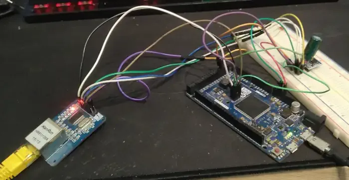

Łukasz Moskała
Sysadmin in love with FreeBSD. I can write code in C++, C++ with Arduino framework, golang, shell scripts and ansible playbooks.
- sparc T3-1
- 2x ibook g4
- LTO3 + changer
- IBM powerpc
# curl -I lukaszmoskala.pl HTTP/1.1 200 OK server: Apache httpd/6.9.420 x-powered-by: free software, drunk sysadmins and bad decisions
#About
To keep this short: 26-year-old sysadmin in love with FreeBSD.
I enjoy tinkering with some obscure hardware, especially if it's on architectures different than x86. I have sparc T3-1 server, two ibook g4's, LTO3 tape drive (with changer), and borrowed IBM workstation on powerpc.
I prefer using jails over virtualization, because of lower overhead. That's how most of my self-hosted things are set up.
I started using linux around 2013-2014, when I got my first raspberry pi. Since then I switched from windows to ubuntu, and later to arch. I later discovered FreeBSD, and started liking it more and more, eventually migrating most of my servers to it. I used to have it installed on company laptop in my first job, since my colleague challenged me to do it.
I prefer using ipv6 when possible, most likely due to the fact that I have one public ipv4 address, while having 1208925819614629174706176 public ipv6 addresses. Unfortunately, my ISP is stuck in the 90's, so I have to use tunnelbroker.net.
I suck at web design, which you may have guessed looking at this page. It's written by hand, without any kind of website generators. However, I don't call it ugly, I call it accessible - you can even view it in text-based browser! Also, you don't need much bandwidth to open it (and server does not have much bandwidth). So if you are connecting to the Internet using IPoAC/rfc1149, you still should be able to open it.
It should also be able to display properly in browsers without CSS support, however users may subject themselves to looking at white background, as for me, primary usage of CSS is to create dark themes.
#Projects
Things I built at home, from the car in the garage to the server this website used to run on.
Hacking Dodge Challenger
esp32 on the CAN-C bus, remote start over WiFi or 2G, GPS, MQTT with mutual TLS and homeassistant.

This website was hosted on Arduino
Arduino Due, enc28j60 and w25q128 flash with my own on-disk format called yar.
Automated garage door opener
esp8266 with relay, hc-12 radio between garage and car, AES-256 with keys changing every 5 minutes.
Time Dilation calculator
"It will be done in 1 hour", and 3 hours later it still is not done? Calculate how fast they had to be going.
Troubleshooting FTP
First step to fix any problem with FTP is to finally stop using FTP.
SPARC T3-1
Notes about using SPARC T3-1, recent openbsd versions no longer boot.
#My favourite technical specifications
There are a few specifications that I like, unfortunately they aren't widely used. I put this section more to benchmark GZIP capabilities of my web server, than for anything else, but I'll leave them here.
#Contact me
## e-mail + gpg
Or you can email me: lm at lukaszmoskala dot pl. Here is GPG key if you want to encrypt message:
4F17573C2A87B286E1747E22C84D508B1FBEFFEA
This key was generated on and is stored on yubikey, so if I lose the yubikey, I lose the key with it.